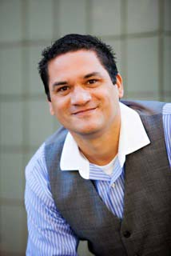

About Me
My Pantry Of Vulnerabilites
August 2017
I'm the nicest person I know. For the most part, I love myself, and I love so many other people. I also love plants, animals, and nature. My heart is huge and it tries to be kind -- always and equally kind -- across the entire spectrum of humanity. Yet, having lived fully, I accept that a few people simply do not like me. These individuals seem to dislike like my passions or my voice, my perspectives or my ideas, my explorations or my discoveries, my spiritual shifts or my soulful indulgences. It's our human condition. For instance, some people do not like how other people look; I actually have a pretty big nose - it's wide and it hooks! I'm also fairly hairy. Plus, I was born with brown skin. Hummmm, what else can I reveal within this pantry of vulnerability? Well... I'm very attracted to freckles and redheads: all redheads, all freckles! Phenotypically, I possess neither red hair or freckles, but I'm attracted to them. Once, perhaps twice in my life, I've been unfairly rejected for not being fair-skined, pale, or white. That hurt me emotionally because it involved romantic love. (Ugh! The confusion and pain!) During that youthful time, I knew deep down - deep in the pit of my soul - that someone special loved me, but her family's intervention negatively influenced our youthful innocent relationship. I learned early on, as a young adult, how racial rejection sucks - yes, prejudicial rejection really sucks! For days, months, and even years afterward, that romantic rejection truly confused my heart. In fact, rejection created so much pain in me that it shifted me deeply into academic endeavors. I tried to become "better" by becoming "smarter". And, in a perverse way, it worked. I had thought that I was already rather intelligent; at least I used to feel intelligent. I had graduated from a Catholic grammar school, a Catholic high school, and a Catholic college. Since childhood, I’ve always know that I was an honest and forthright and charming individual, but in the early stages of my autonomy - as a post baccalaureate - I attempted to become much more intelligent than I ever needed to be, and I did so in order to become accepted by a more "privileged" class of white folks. I’m Hispanic. Today, as I approach the half-century mark, I prefer to exercise a mindful emptiness within my soulful vessel, sometimes forgetting all facts and dates, forgetting all algorithms and equations, or even forgetting my past rejections. More often, these days, I trust that an accumulation of wisdom will arise within me, whenever necessary, perhaps during one of those difficult junctures in life: death of a loved one, loss of a job, or an unforeseen downswing within the normal vicissitudes of life. If my mind fails me, I can simply employ referencing tools,right? - Dictionaries, Encyclopedias, Thesauri, Wikipedia, Meditation, Facebook (well...maybe not Facebook!). Nothing is so important that a good almanac shouldn't leave me dumbfounded. What else? What else can I reveal in my pantry of vulnerabilities? Well, I've never purchased an automobile. My favorite color is orange. I like the sound of accordion music, and I actually take accordion lessons. I love to write: poetry in particular and particularly poetry. My best writings remain hidden, germinating slowly until such time that I complete my first novel. I love run-on sentences and long paragraphs (LOL), however I’m limited in my understanding of the language of emojis. As an adult, I’ve resided in over 17 cities and 6 states, but I've never worked for the military. In fact, I abhor projectiles. With bravery, I encourage exploration. I'm progressive and fair-minded. I tend to organize inanimate objects well, so guess that I enjoy organizing stuff. But I don't accumulate things; I prefer to purge! I've been in love twice, once with a woman and once with a man. I'm not risk averse. I'm a "don't" player at craps - a good “don’t” payer! I can't lie. Plants love me. I'm very tactile, so I hug and touch people in order to establish genuine connectivity. Sadly, I’ve lived a rather celibate life, and even though I once owned a fine home and a few businesses, I've purged nearly all of my belongings. I'm clean, neat, and tidy. If it wasn’t for my old journals and some sentimental paperwork, I could probably fit my entire life into two suitcases. These days, nostalgia only beckons through music. I use to be innocent, then I became naive, and now I am aware; but I've never been hateful. At an early and formative crossroad, I practiced holiness and certainty. I served. I sang. I orated. Today, however, during this midlife crossroad, I'm more natural and ambiguous. No masters for me, please! No masters, that is, except love. Love overpowers my faculties. It wins. Hummmm... actually, I'd like to retract my previous statement, wherein I claimed to lack any sense of hated. This isn’t quite true. I've sometimes hated myself. Yep, self-hatred. Not to be confused with depression or sadness, this self-hatred evolved from my internal dialogs of inadequacy; never being good enough mired my soul... unnecessarily! There exists a fine line between love and hate, so it matters not which waters wash away my hopes and dreams. I’ve traversed many natural aqueducts. I’ve lived in many regions of the United States, as well as Madeira Island, Portugal, and I've travelled through eleven different countries. I have celebrated multiculturalism throughout my life, because I love culture! (I grew up in Sacramento, one of the most unsung multicultural cities in the world). Some folks hate culture and all of its richness, but I embrace it. I do not understand hate-filled and ignorant people, but I rarely attempt to reject them - I recon. Yes, I don't subscribe to ignorance, but neither do I reject it. Take my stance on tabloid journalism, or partisan politics, or popular entertainment; overall, they grossly and unnaturally upstage the human spirit of compassion and giving. These platforms are painfullly sophomoric, trite, and deeply inflated with capitalistic illusions, but I don't hate them. And although I was once a vibrant, youthful athlete who twice won the Sacramento Metro League 110-meter high hurdle championship and once captained the varsity football team while dating the head cheerleader (embarrasingly, I also admit that I indulged in the published daily statistics of professional athletic teams, the way a myopically addicted capitalist might follow commodities trading), though I certainly do not care for commercial sporting events anymore. During my programmed youth, being a fanatical fan of professional sports sculpted the essence of my being, that is, until, well... I realized that my “essence” had nothing to do with with the business activities of other people. So, I don't hate, and I'm the nicest person I know. I can sing. I can dance. I can meditate. I've never had any tatoos or piercings. I can express my joys internally, and especially when I commune with nature. I love nurturing plants, feeding birds, and experiencing the three phases of water. I believe in quantum consciousness and the superposition of subatomic particles. I believe in quantum entanglement. I’m astounded by the murmuration of starlings and fish. Perhaps my observation of nature is the reason I cannot withstand being alone. I’m not a follower, but I need people. I need to feel love and acceptance. Even so, some of my old friends and family still do not care for me as a person. It's true. I understand that my explorative temperment seems unstable or reckless, but I simply have wings: they must fly! I also have healthy feet, so I run toward life, not away from it. I am not afraid to shift. When I finally fell out of "first-love" with a woman and fell into "first-love" with a man, some very dear friends barked at me: "Hate the sin, love the sinner." When I discovered atheism for myself - alone and without any outside influencers - and when I discovered my courageous voice against the contradictions of theism (monotheism in particular) some people asked me to stay away from their children, as if, I might add, I would ever engage a child in philosophical discussions of mythology. Nonsense. When I shared my newfound awarenesses, my ability to focus my awareness on my own awareness -- being aware of being aware -- many people lost site of my innate goodness, calling me crazy or bipolar. I know very well that this is untrue (they also know this, I'm sure, quite well). Yet some family and friends felt the need to divorce themselves from my pure heart, the same heart that beat gloriously when I fulfilled their rigid narrative and satisfied their images of me: "Steve the alter boy", "Steve the choir boy", Steve... a glorious singer of praises as "Steve the believer" and "Steve the Roman Catholic". I do not want to be confined by stories or narratives. Truthfully, I do not hate them for misunderstanding my evolution. Come heaven or hell, I still respect ritual and litergy. But war is about old men fighting and young men dying. I do not want stenosis to grasp onto my lifelong narratives, so I'll continue to purge them. Today, as I distill my vulnerabilities, I feel rather fearless. Most people understand me to be gentle and kind, fair and loving, honest and pure. So I will continue to be the nicest person that I know, and I vow to be even gentler and more loving to myself. As each day dissipates, I intend to take life one moment at a time. I am a good man. It is my responsibility to be good to others, especially to my family and friends. I thank you for enduring my pantry of vulnerabilities.
Connect With Me